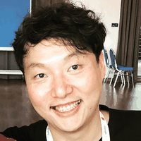

2025.12 — Present
Senior Android Developer · Samsung Food (formerly Whisk)

I was born and raised in Busan, South Korea, and finished school in Seoul. I started out in embedded software and moved into Android development in 2010. After 7 years building apps in Korea, I spent 1 year and 7 months in Kuala Lumpur and 3 years and 10 months in Singapore, before moving back home.
I currently work as a Senior Android Developer at Samsung Food (formerly Whisk). Before that, I led Android development in Singapore and Malaysia in fintech and tourism, then built e-commerce products at Coupang, and worked on mobile advertising at Digital Turbine, remotely from Korea.
What draws me isn't any one industry. It's building things that work well for a lot of people at once. I've done that in fintech, e-commerce, and adtech, and now in food tech and health tech at Samsung Food.
I co-organized Google Developer Groups (GDG) Singapore for a year and spoke at GDG events in Kuala Lumpur, Singapore, Cebu, and Hong Kong. I also mentor junior engineers at F-Lab.
I'm always open to hearing about interesting work. You can reach me via LinkedIn, email, or GitHub.
韓国・釜山生まれ育ち、ソウルで学校を卒業しました。キャリアは組み込みソフトウェアから始め、2010年にAndroid開発へ移りました。韓国で7年間アプリ開発に携わった後、クアラルンプールで1年7ヶ月、シンガポールで3年10ヶ月を過ごし、その後帰国しました。
現在はSamsung Food（旧Whisk）でシニアAndroidデベロッパーとして働いています。それ以前は、シンガポールとマレーシアでフィンテックと観光分野のAndroid開発をリードし、その後Coupangでeコマース関連のプロダクト開発を担当し、Digital Turbineではモバイル広告分野で韓国からリモートで働きました。
特定の業界にこだわりはありません。惹かれるのは、多くの人にとって使いやすいものを作ることです。これまでフィンテック、eコマース、アドテクの分野でそれを実践し、現在はSamsung Foodでフードテックとヘルステックに取り組んでいます。
Google Developer Groups (GDG) Singaporeのコオーガナイザーを1年間務め、クアラルンプール、シンガポール、セブ、香港のGDGイベントで登壇しました。F-Labではジュニアエンジニアのメンタリングもしています。
興味深いお話であれば、いつでもお聞きしたいと思っています。ご連絡はLinkedIn、メール、またはGitHubまでお願いします。
EXPERIENCE
経歴
2025.12 — Present
Senior Android Developer · Samsung Food (formerly Whisk)
2024.08 — 2025.05
Senior Android Developer · Digital Turbine (mobile app distribution)
2023.02 — 2024.04
Staff Mobile Engineer · Coupang (Coupang Eats)
2021.03 — 2023.01
Lead Android Developer, AVP · OCBC Bank (OCBC Mobile Banking)
2019.03 — 2021.03
Senior Mobile Developer · Singapore Tourism Board (Visit Singapore)
2017.08 — 2019.03
Android Specialist · Celcom Planet (11Street)
2008.07 — 2017.05
Mobile and software roles in Korea, including Woowa Brothers (Baemin), Korea's largest food delivery platform
2025.12 — 現在
シニアAndroidデベロッパー · Samsung Food（旧Whisk）
2024.08 — 2025.05
シニアAndroidデベロッパー · Digital Turbine（モバイルアプリ配信）
2023.02 — 2024.04
スタッフモバイルエンジニア · Coupang（Coupang Eats）
2021.03 — 2023.01
リードAndroidデベロッパー（AVP） · OCBC Bank（OCBC Mobile Banking）
2019.03 — 2021.03
シニアモバイルデベロッパー · Singapore Tourism Board（Visit Singapore）
2017.08 — 2019.03
Androidスペシャリスト · Celcom Planet（11Street）
2008.07 — 2017.05
韓国国内でのモバイル・ソフトウェア開発職（韓国最大のフードデリバリープラットフォーム Woowa Brothers〈配達の民族〉を含む）
EDUCATION
学歴
2008
M.S., Electrical Engineering · Hongik University
2006
B.S., Electrical Engineering · Hongik University
2008
電気工学修士 · 弘益大学校
2006
電気工学学士 · 弘益大学校